01 / 实验性游戏设计01 / EXPERIMENTAL GAME DESIGN
复梦The Same Dream
THE SAME DREAM复梦
第一人称平台跳跃迷宫 · 实验性项目FIRST-PERSON PLATFORMING MAZE · EXPERIMENTAL PROJECT
以反复变化的梦境为背景，玩家通过第一人称平台跳跃探索迷宫。本实验研究不同玩家引导方式对导航速度和沉浸感的影响。A first-person platforming maze set in a recurring, shifting dream. This experimental project studies how different player-guidance methods affect navigation speed and immersion.
关键词KEYWORDS
关卡设计Level Design
玩家引导Player Guidance
沉浸感Immersion
- 项目时间YEAR
- 2026
- 制作工具TOOLS
- Unreal Engine · Photoshop

视频专区PROJECT MEDIA
THE SAME DREAM
项目视频Project Videos
项目目录Contents
01
研究目标 / 项目简介RESEARCH GOALS / PROJECT SUMMARY项目概览Project Overview
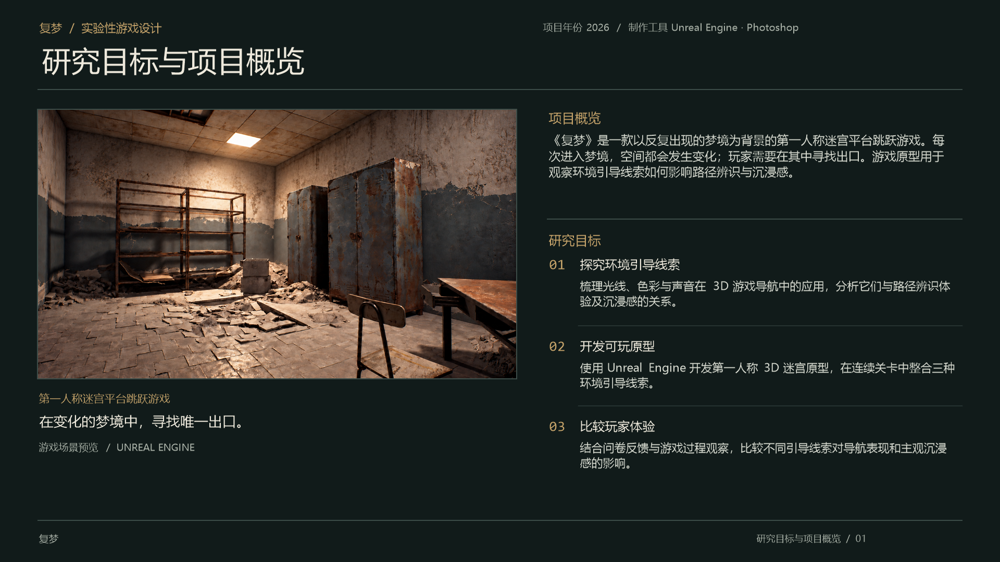
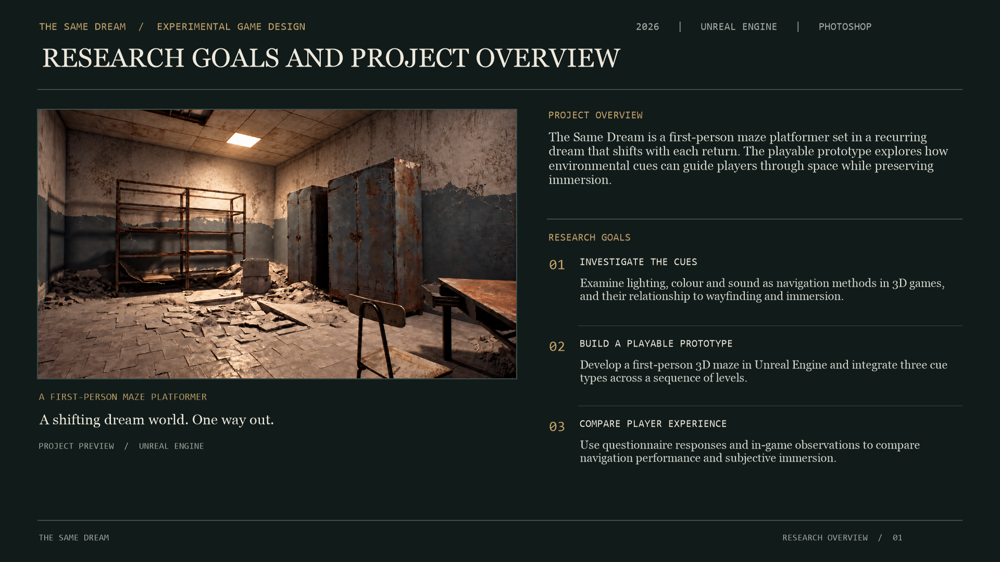
02
核心问题 / 研究线索RESEARCH QUESTION / CUE TYPES研究背景与概念框架Research Background
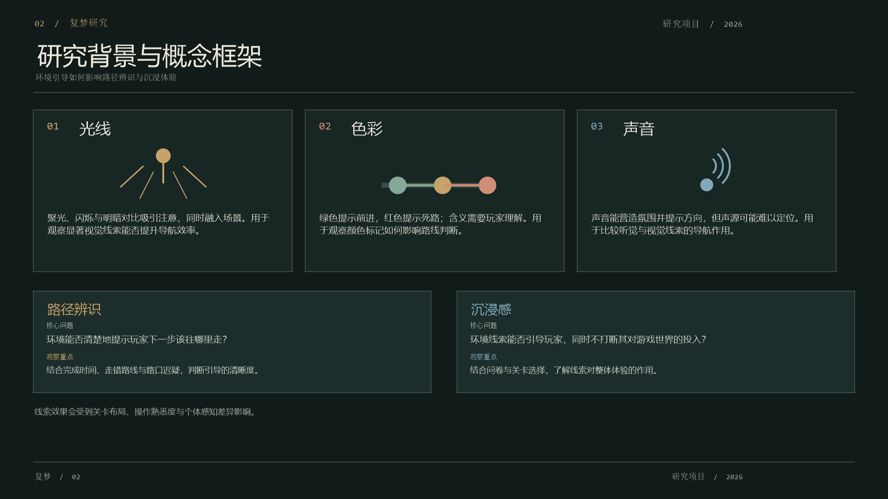
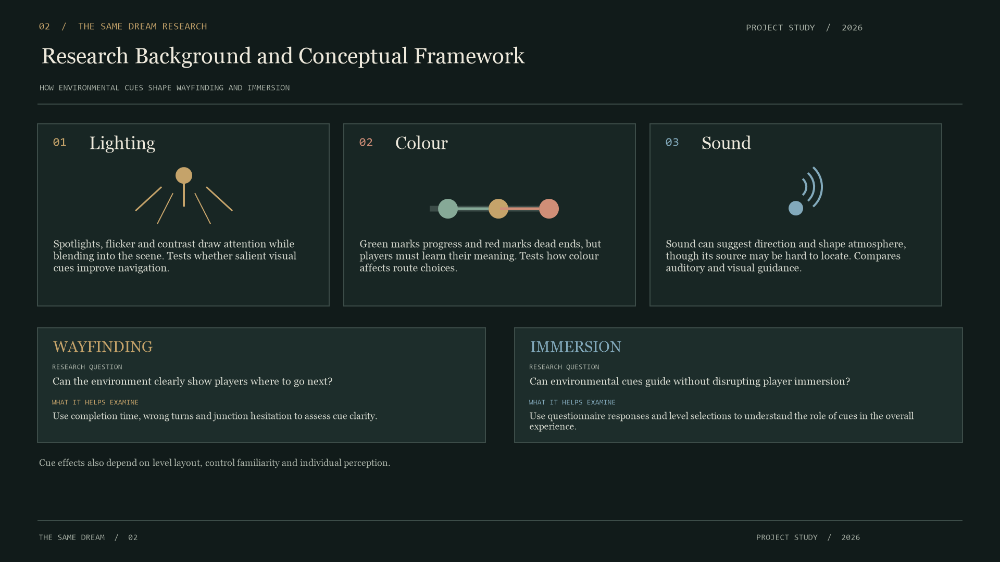
03
关卡设计 / 实机画面LEVEL DESIGN / GAMEPLAY原型迭代与关卡引导设计Prototype & Level Guidance
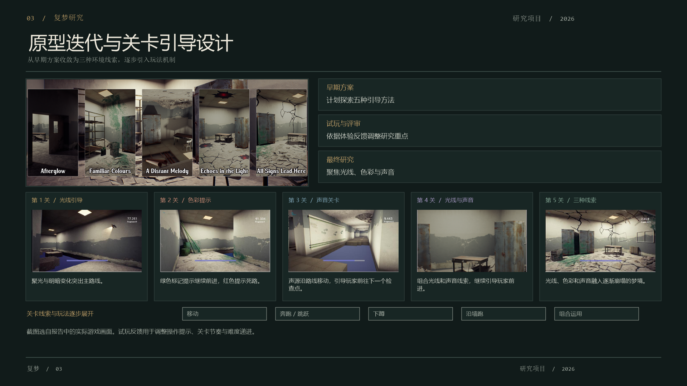
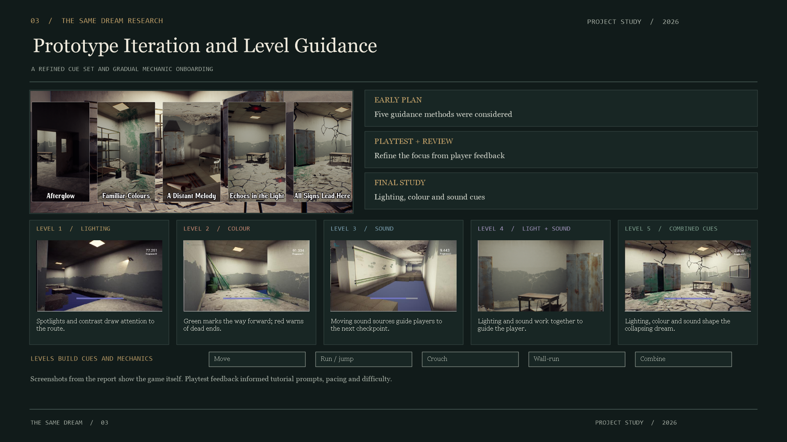
04
参与者 / 测试流程PARTICIPANTS / PLAYTEST FLOW研究方法与测试流程Methodology
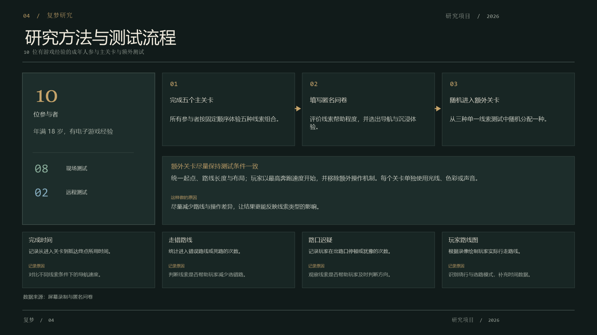
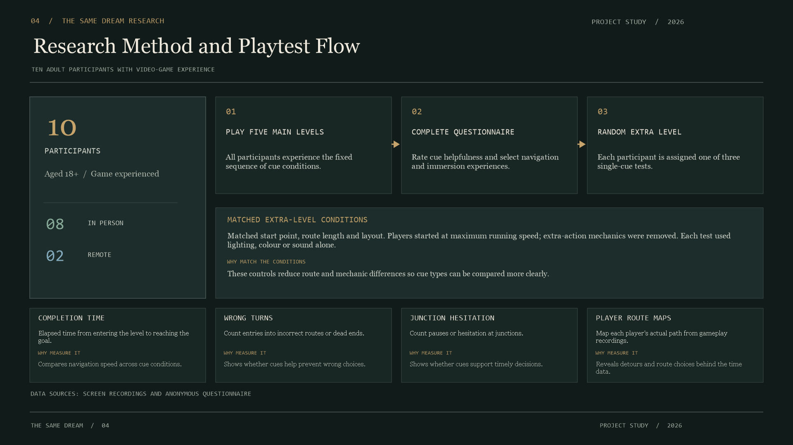
06
问卷总结 / 统计图表SURVEY SUMMARY / CHARTS沉浸感结果Immersion Results
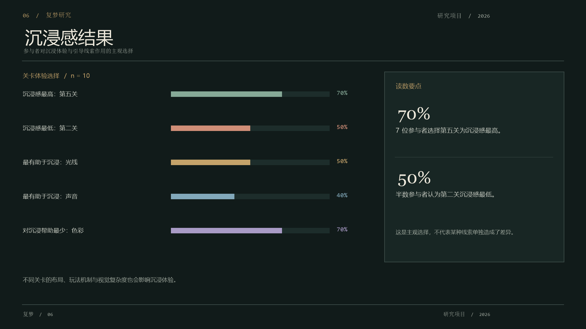
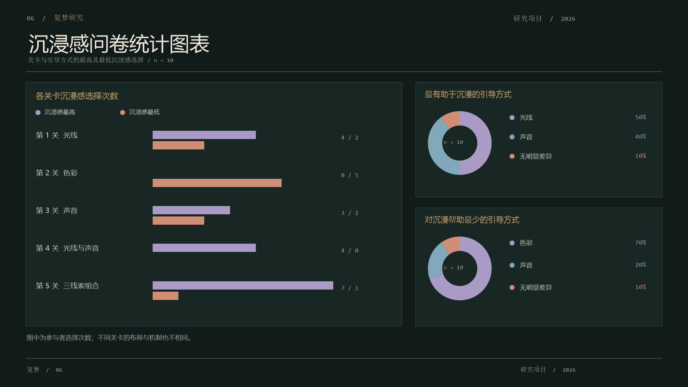
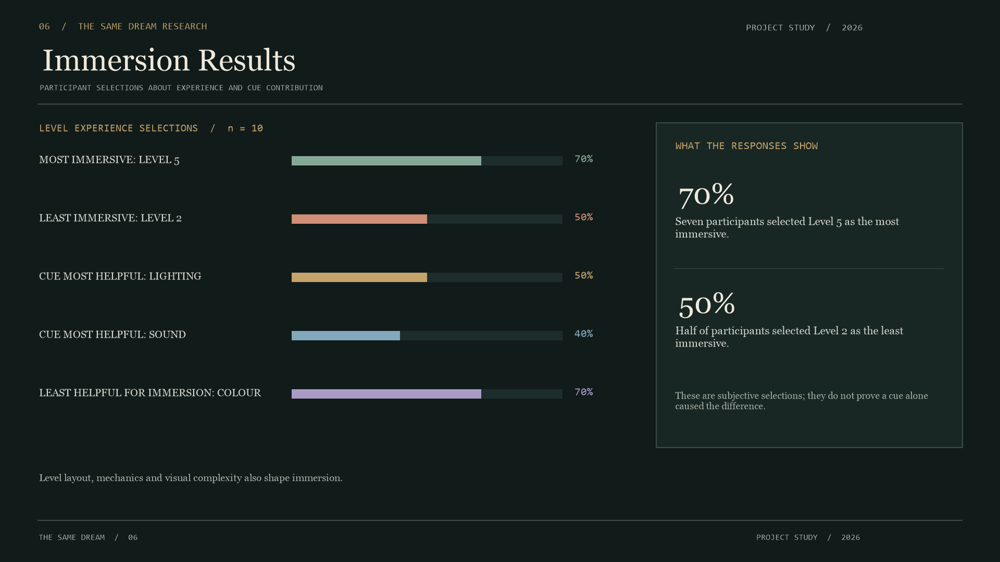
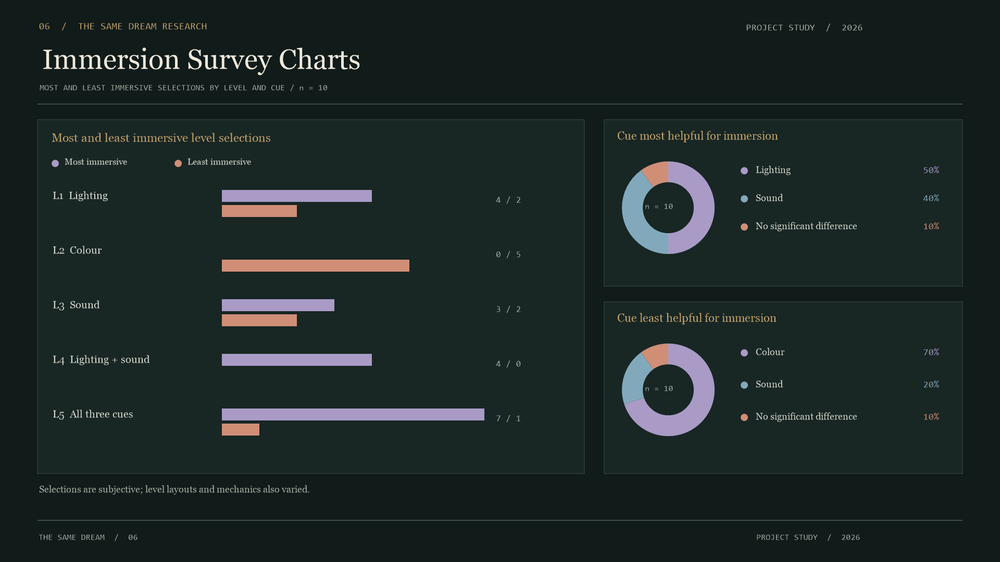
07
研究发现 / 后续改进FINDINGS / FUTURE WORK结论、局限与后续方向Conclusion & Reflection
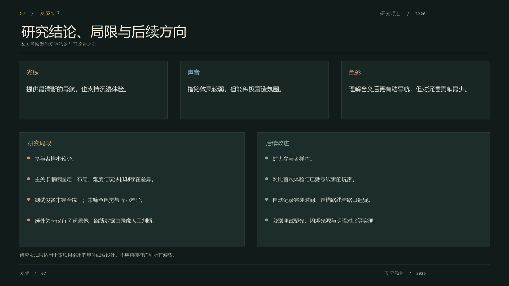
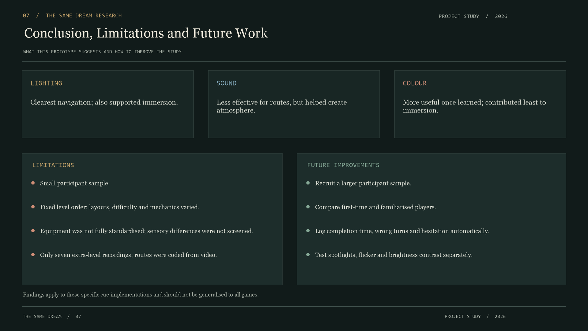